VLBI Self-calibration & Imaging
For this section, we will work with a dataset from the European VLBI Network (EVN), observed under project code RSM07 on 16 September 2025 at L-band (1.67 GHz). The general calibration and imaging steps required for VLBI data are similar to what was covered in the previous tutorial about calibration, imaging and self-calibration. However, there are some important differences that will be pointed out in this tutorial.
A few words about VLBI Calibration
For the sake of time, we will not cover VLBI calibration in detail. If you are interested in the details of VLBI calibration, please have a look at this EVN tutorial, where all required calibration steps are explained. One important difference to the previous calibration tutorial is that fringe-fitting is an integral part of VLBI phase calibration, as independent clocks from antennas that are thousands of kilometers apart from each other have to be aligned. If you are interested in performing the calibration yourself, you can simply download the raw data for RSM07 from the EVN archive (under "Fitsfiles") and execute the calibration script that we have prepared for you in CASA.
execfile('calibrate.py')
Data required
For this tutorial, you require the following files, downloadable directly here as one zip-archive. Alternatively, you can also
J1848+3219_calibrated.ms- measurement set containing the calibrated visibilities of the phase reference calibrator (J1848+3219).3C395_calibrated.ms- measurement set containing just the calibrated visibilities of the phase reference target (3C395).
Table of contents
1. Inspect the data
ADD SOME PLOT HERE SHOWING THE PHASE REF OBS STRATEGY!!
In order to familiarize yourself with the data it is a good idea to execute some of the standard procedures shown in the introduction tutorial. We will not replicate all steps here, but let's at least have a look at the uv-coverages of both sources and the amplitudes and phases vs. uv-distance.
- First let's have a look at the uv-coverage for both sources, using
plotms()plotms( vis="3C395_calibrated.ms/", xaxis="uwave", yaxis="vwave", coloraxis="spw" ) - Then let us check the visibility amplitudes vs. uv-distance, with 10s-time averaging
plotms( vis="3C395_calibrated.ms/", xaxis="uvdist", yaxis="amp", avgtime="10", correlation="rr,ll" ) - And finally the visibility phase vs. uv-distance
plotms( vis="3C395_calibrated.ms/", xaxis="uvdist", yaxis="phase", avgtime="10", correlation="rr,ll" )
3C395 (target)
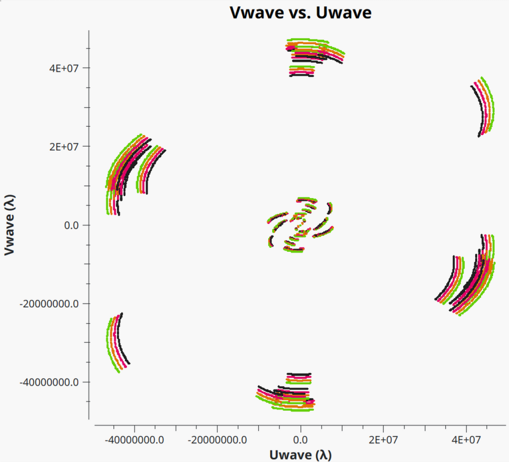
J1848+3219 (phase calibrator)
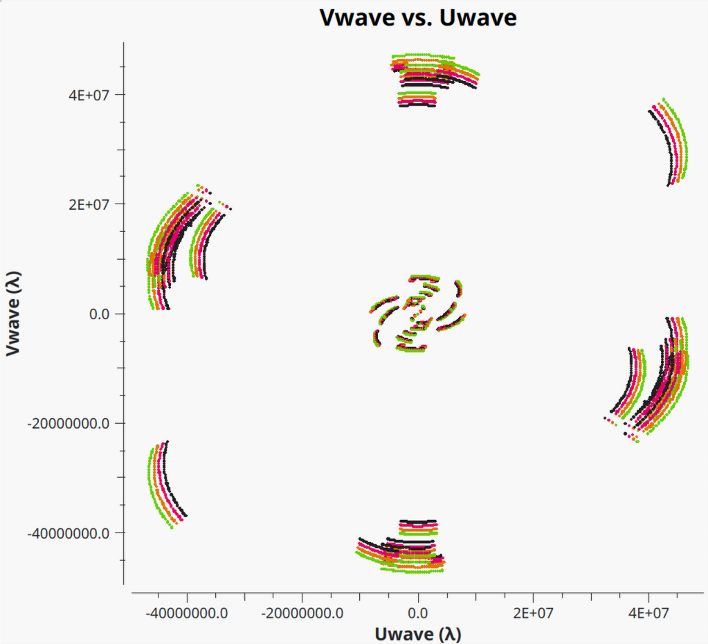
3C395 (target)
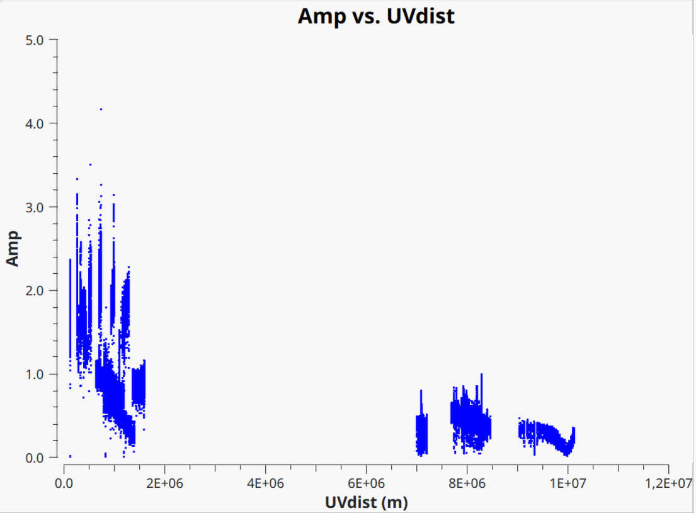
J1848+3219 (phase calibrator)
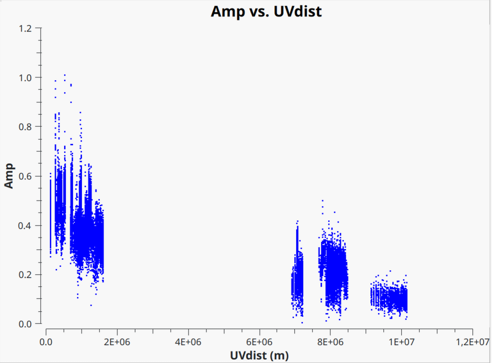
3C395 (target)
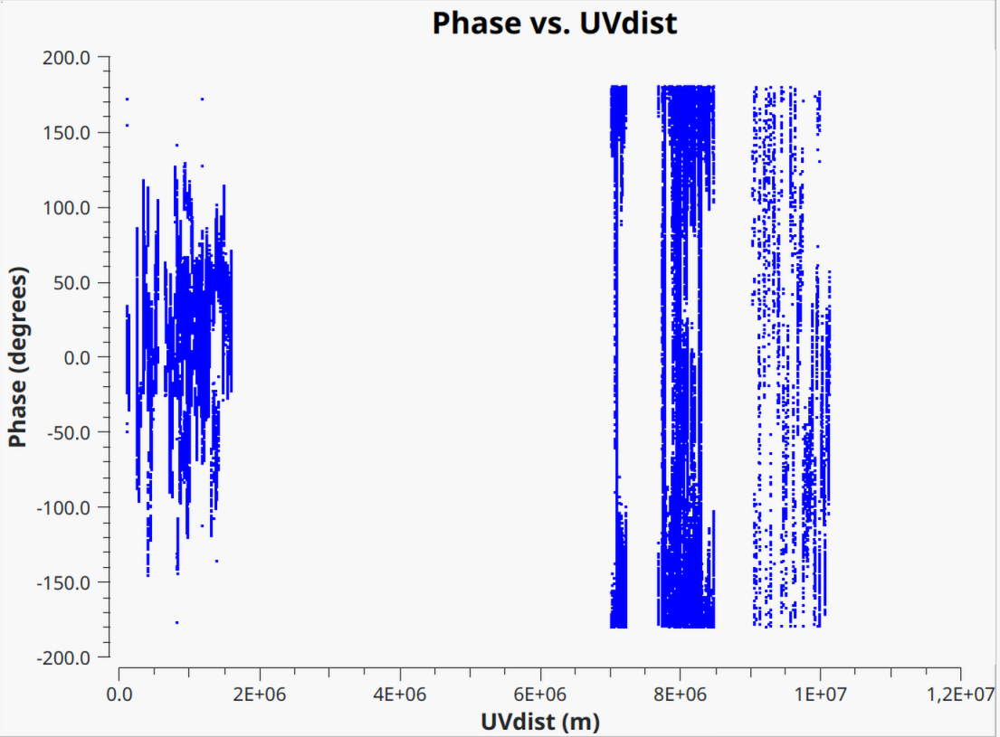
J1848+3219 (phase calibrator)
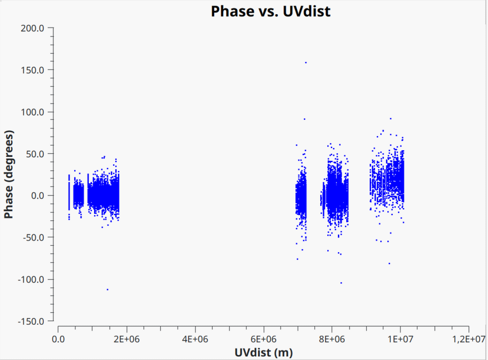
You can clearly see that the scatter in phase and amplitudes is still quite high, which we will try to improve through self-calibration in the following steps.
Note: For typical VLBI data, you will likely have to go through some additional flagging. We have already taken care of flagging the data provided here, so you can skip the flagging process.
2. Imaging the phase calibrator
Before we can perform any kind of self-calibration, we first need to obtain an initial image. For this VLBI observation, we will start with imaging the phase calibrator, which we will later also use to derive the self-calibration solutions and apply them to the target source.
- Let's recall the
tcleantask from the previous tutorials (oricleanfor MacOS), to create a first image of the phase calibrator.Linuxtclean( vis="J1848+3219_calibrated.ms/", imagename="J1848+3219_first_image", specmode="mfs", niter=1500, cycleniter=300, threshold=0, imsize=[512,512], cell="0.3mas", weighting="natural", deconvolver="hogbom", savemodel="modelcolumn", interactive=True )MacOSfrom casagui.apps import run_iclean run_iclean( vis="J1848+3219_calibrated.ms/", imagename="J1848+3219_first_image", specmode="mfs", niter=1500, cycleniter=300, threshold=0, imsize=[512,512], cell="0.3mas", weighting="natural", deconvolver="hogbom", savemodel="modelcolumn" ) ft(vis="J1848+3219_calibrated.ms/", model="J1848+3219_first_image.model", usescratch=True ) Let's start with a first clean mask similar to this
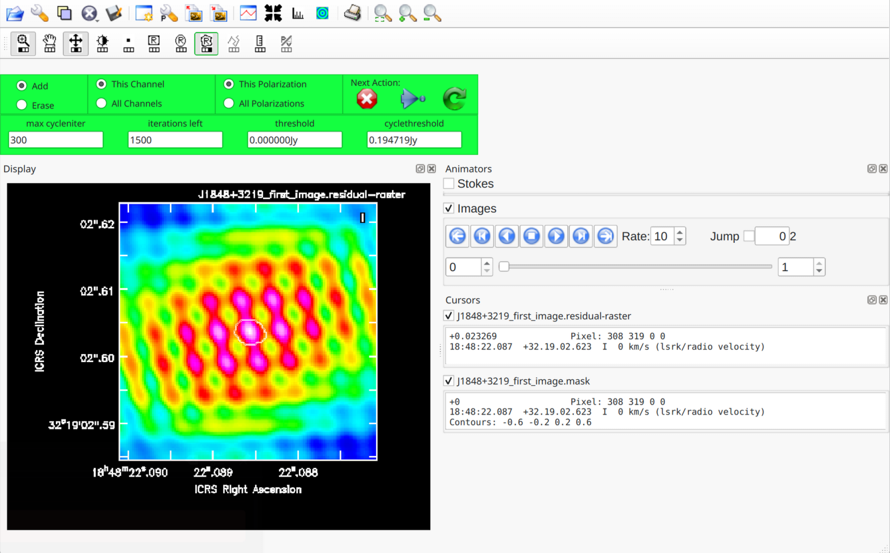
Keep cleaning and adjusting the mask (if required) until your residual map looks similar to this (the bright spots are likely artifacts, so it is best not to put clean windows there):
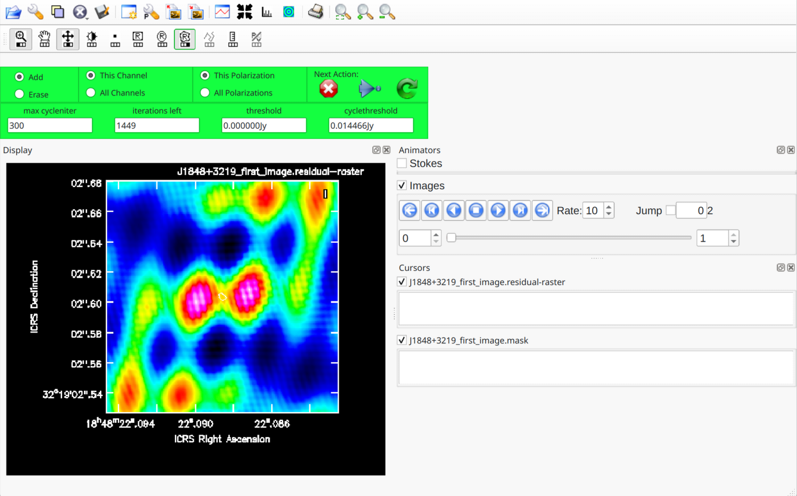
- Now you can close the
tcleanwindow by clicking on the large X. It may take some time as CASA is loading your model into the measurement set. Once this process has finished it is a good idea to check that the CLEAN model that was created describes the data reasonably well. Unfortunately, there is no built-in CASA plot function to do this, but we have created a short plotting script that you may run on your measurement set to compare its model and data visibilities.execfile("compare_model_data.py")The output should look something like this and the CLEAN model should describe the data reasonably well.
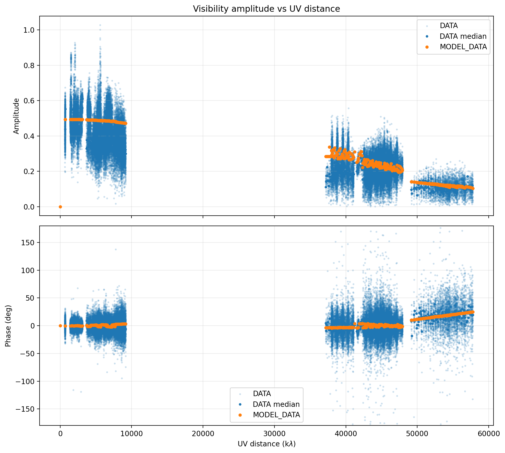
3. Self-calibrate the phase calibrator
Once you are satisfied with your initial CLEAN image of the phase calibrator and the model visibilities describe the data as good as possible, we can start with deriving self-calibration solutions.
-
First, we will start with a phase self-calibration and use a long solution interval
gaincal( vis="J1848+3219_calibrated.ms/", calmode="p", #use "p" to calibrate phases only or "ap" for amplitude and phase caltable="J1848+3219-sc-p1", field="J1848+3219", solint="10min", refant="EF", minblperant=3, minsnr=5 ) -
Now that we created a first phase self-calibration table, we can plot it
and look at the suggested corrections
plotms( vis="J1848+3219-sc-p1", gridcols=2, gridrows=3, xaxis="time", yaxis="phase", iteraxis="antenna", coloraxis="spw", plotrange=[-1,-1,-180,180] )The plot should look similar to the one shown below. Note that the corrections are typically small. Additionally, for some antennas the solution is missing because they have no data or were already flagged. This is fine and you do not have to worry about it.
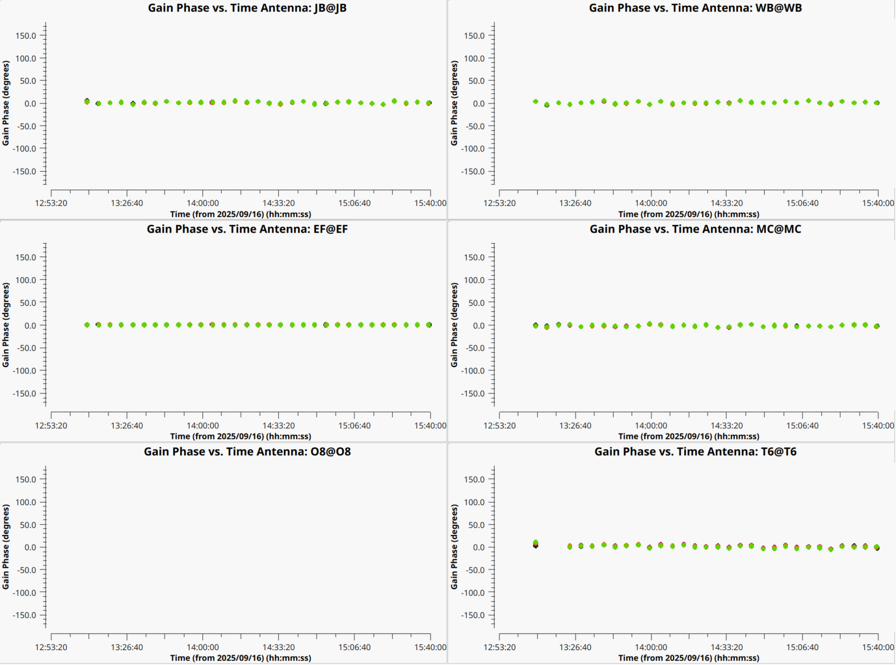
-
Finally, the self-calibration needs to be applied to the measurement set, using the
applycaltaskapplycal( vis="J1848+3219_calibrated.ms/", gaintable=["J1848+3219-sc-p1"], )
4. Iterative self-cal and imaging (hybrid imaging)
After applying the first phase self-calibration, you should go back to step 2
and create a new image of the phase calibrator (ideally, use a different imagename
value for tclean, otherwise you will run into an error).
Once this is done, you can perform self calibration in phase again, but with a shortened solution interval
(2min, as you do not expect faster changes due to the atmosphere).
After another imaging round, if the solutions (in plots) seem to converge to just small improvements,
one can run the self-calibration in amplitude and phase (using calmode="ap" in
gaincal).
For amplitude self-calibration, you do not expect fast changes, but only on the order of ~30 min or more for this dataset.
Therefore, a longer solution interval of half an hour or one hour is sufficient. Below, we provide a short summary of these steps
-
Image the phase calibrator again
Linuxtclean( vis="J1848+3219_calibrated.ms/", imagename="J1848+3219_second_image", specmode="mfs", niter=1500, cycleniter=300, threshold=0, imsize=[512,512], cell="0.3mas", weighting="natural", deconvolver="hogbom", savemodel="modelcolumn", interactive=True )MacOSfrom casagui.apps import run_iclean run_iclean( vis="J1848+3219_calibrated.ms/", imagename="J1848+3219_second_image", specmode="mfs", niter=1500, cycleniter=300, threshold=0, imsize=[512,512], cell="0.3mas", weighting="natural", deconvolver="hogbom", savemodel="modelcolumn" ) ft(vis="J1848+3219_calibrated.ms/", model="J1848+3219_second_image.model", usescratch=True ) -
Compare model with data
execfile("compare_model_data.py") -
Generate phase calibration table with shorter solution interval of 2 minutes.
gaincal( vis="J1848+3219_calibrated.ms/", calmode="p", #use "p" to calibrate phases only or "ap" for amplitude and phase caltable="J1848+3219-sc-p2", field="J1848+3219", solint="2min", gaintable="J1848+3219-sc-p1", interp=["linear"], refant="EF", minblperant=3, minsnr=5 ) -
Apply both phase calibration tables to the data
applycal( vis="J1848+3219_calibrated.ms/", gaintable=["J1848+3219-sc-p1","J1848+3219-sc-p2"], ) -
Image the phase calibrator again
Linuxtclean( vis="J1848+3219_calibrated.ms/", imagename="J1848+3219_third_image", specmode="mfs", niter=1500, cycleniter=300, threshold=0, imsize=[512,512], cell="0.3mas", weighting="natural", deconvolver="hogbom", savemodel="modelcolumn", interactive=True )MacOSfrom casagui.apps import run_iclean run_iclean( vis="J1848+3219_calibrated.ms/", imagename="J1848+3219_third_image", specmode="mfs", niter=1500, cycleniter=300, threshold=0, imsize=[512,512], cell="0.3mas", weighting="natural", deconvolver="hogbom", savemodel="modelcolumn" ) ft(vis="J1848+3219_calibrated.ms/", model="J1848+3219_third_image.model", usescratch=True ) -
Compare model with data
execfile("compare_model_data.py") -
Generate phase calibration table with shorter solution interval of 2 minutes.
gaincal( vis="J1848+3219_calibrated.ms/", calmode="ap", #use "p" to calibrate phases only or "ap" for amplitude and phase caltable="J1848+3219-sc-ap", field="J1848+3219", solint="30min", gaintable=["J1848+3219-sc-p1","J1848+3219-sc-p2"], interp=["linear","linear"], refant="EF", minblperant=3, minsnr=5 ) -
Apply all self-calibration tables to the data
applycal( vis="J1848+3219_calibrated.ms/", gaintable=["J1848+3219-sc-p1","J1848+3219-sc-p2","J1848+3219-sc-ap"], ) -
Finally, you can image the phase calibrator one last time, to obtain a final image
Linux
tclean( vis="J1848+3219_calibrated.ms/", imagename="J1848+3219_final_image", specmode="mfs", niter=1500, cycleniter=300, threshold=0, imsize=[512,512], cell="0.3mas", weighting="natural", deconvolver="hogbom", savemodel="modelcolumn", interactive=True )MacOSfrom casagui.apps import run_iclean run_iclean( vis="J1848+3219_calibrated.ms/", imagename="J1848+3219_final_image", specmode="mfs", niter=1500, cycleniter=300, threshold=0, imsize=[512,512], cell="0.3mas", weighting="natural", deconvolver="hogbom", savemodel="modelcolumn" ) ft(vis="J1848+3219_calibrated.ms/", model="J1848+3219_final_image.model", usescratch=True ) -
You can inspect your final image with
imviewand it will likely look similar to this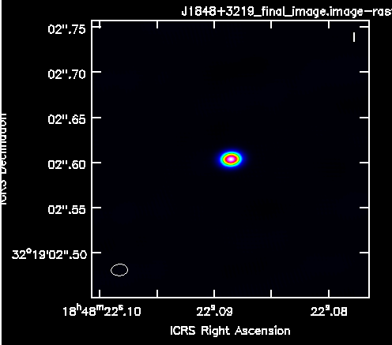
5. Apply solutions to target and image
After finalizing the self-calibration of the phase calibrator, we can easily apply the same solutions to the science target (3C395), and image it.
- Apply amplitude and phase calibration to science target
applycal( vis="3C395_calibrated.ms/", gaintable=["J1848+3219-sc-p1","J1848+3219-sc-p2","J1848+3219-sc-ap"], interp=["linear","linear","linear"] ) -
Image science target
Linux
tclean( vis="3C395_calibrated.ms/", imagename="3C395_final_image", specmode="mfs", niter=1500, cycleniter=300, threshold=0, imsize=[1024,1024], cell="0.3mas", weighting="natural", deconvolver="hogbom", savemodel="modelcolumn", interactive=True )MacOSfrom casagui.apps import run_iclean run_iclean( vis="3C395_calibrated.ms/", imagename="3C395_final_image", specmode="mfs", niter=1500, cycleniter=300, threshold=0, imsize=[1024,1024], cell="0.3mas", weighting="natural", deconvolver="hogbom", savemodel="modelcolumn" ) ft(vis="3C395_calibrated.ms/", model="3C395_final_image.model", usescratch=True ) -
And again, you can plot the final image of the science target with
imview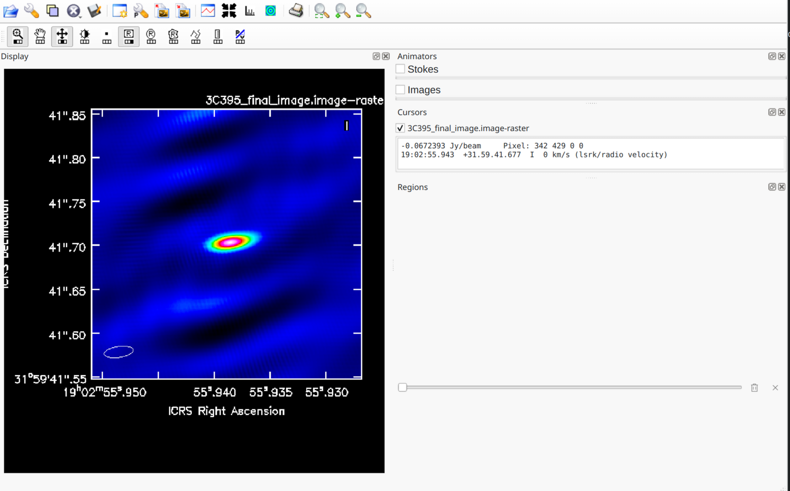